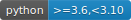
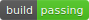
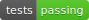
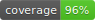

{kind=link}

A library for exploratory analysis of Time Series data¶
tslumen helps bring to light the key characteristics of your time series data with rich, pre-canned artifacts, packed with charts and statistical information. The primary goal of tslumen is to expedite and bring consistency to how time series EDA is performed, allowing you to uncover the fundamental aspects in seconds rather than hours or days.
Key features¶
Platform agnostic, integrates nicely with your datascience workspace
Built on open source technology and research
Highly customizable and extensible
Data (profiling results) completely detached from the visuals
Can be executed from the command line
Efficient execution using parallel processing
Includes a great number of statistical information, including descriptive statistics statistical tests like KPSS or ADF, correlation, tsfeatures, etc.
Various plots specifically tailored to time series analysis
Self-contained HTML report that can easily be shared with interested parties
Fully interactive dashboard for a richer experience and detailed exploration
Note
This package is still in incubation stage. Breaking changes to the API in between patch versions are to be expected. Similarly, the documentation is not guaranteed to always be up to date.
Last updated: Nov 22, 2022 Version: v0.0.1